[NYMPHE]
بدن تو، خالق یک اثر هنری است.
طراحی UI/UX · تحقیقات کاربر · استراتژی برند و روایت
برای دیدن پروژه کلیک کنید
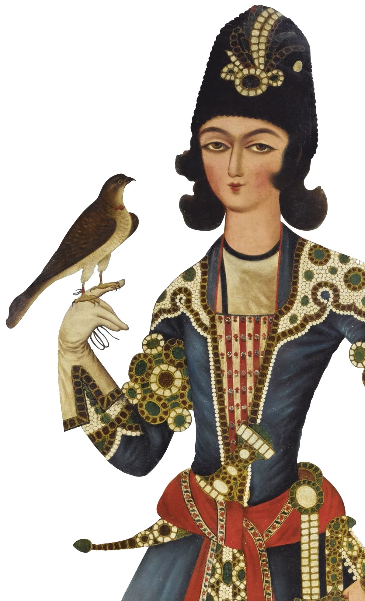
طراح UI/UX هستم و در دیجیتال مارکتینگ هم کار میکنم. در هر پروژه هم تجربهی داخل اپ را طراحی میکنم و هم مسیری که کاربر از آن، اپ را پیدا میکند. عضو Apple Developer Academy در اروپا هستم و در تیمهای بینالمللی، اپها را از تحقیقات کاربر تا انتشار در App Store بردهام.
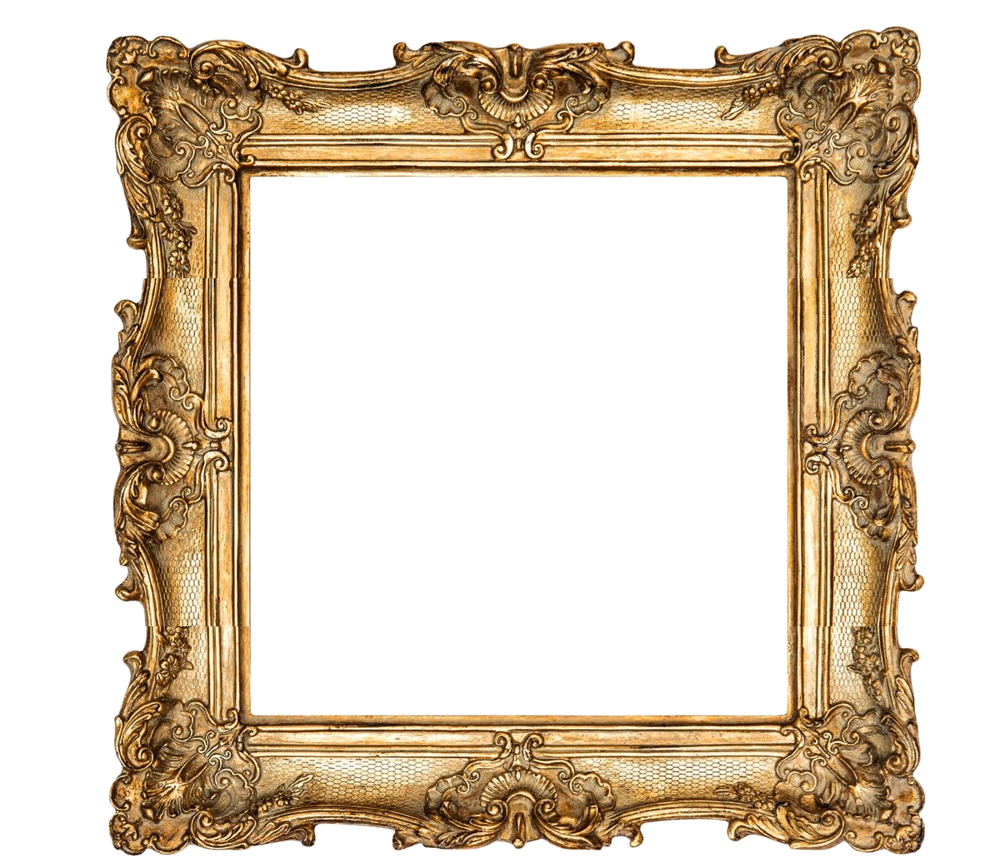
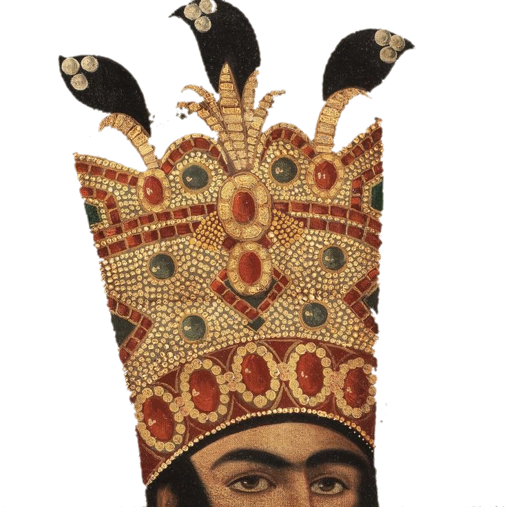
بدن تو، خالق یک اثر هنری است.

صدای درون گوشت را آرام کن.
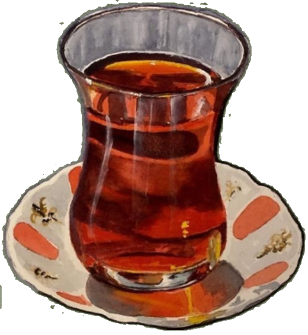
خلاصهاش کن؛ بیاینترنت، بینگرانی.
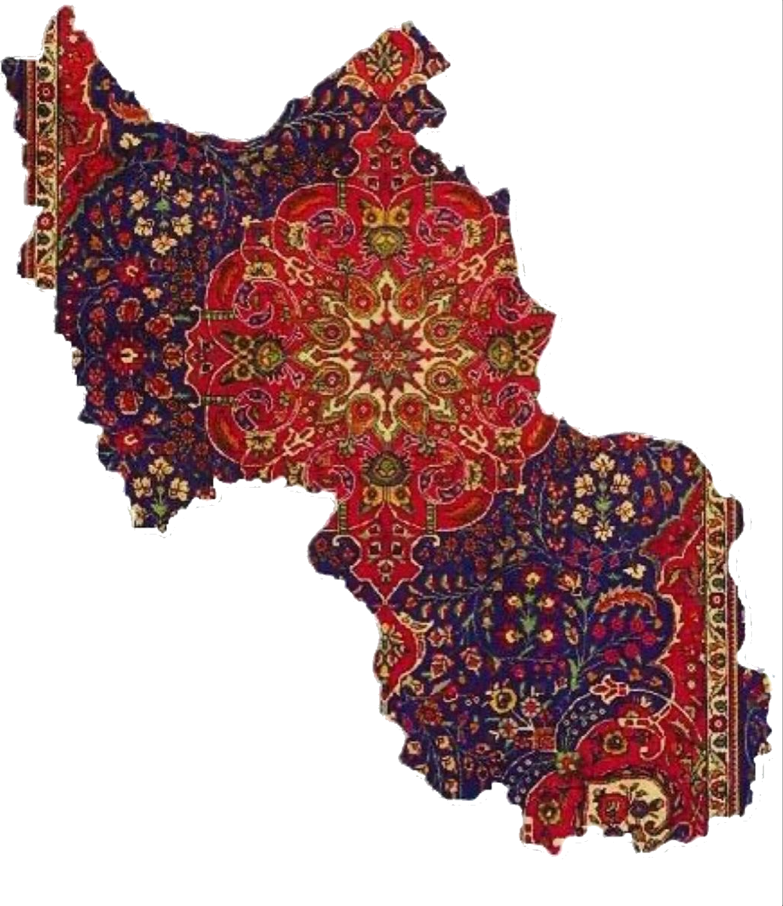
طراح UI/UX هستم و در دیجیتال مارکتینگ هم کار میکنم. در هر پروژه هم تجربهی داخل اپ را طراحی میکنم و هم مسیری که کاربر از آن، اپ را پیدا میکند. عضو Apple Developer Academy در اروپا هستم و در تیمهای بینالمللی، اپها را از تحقیقات کاربر تا انتشار در App Store بردهام.
بدن تو، خالق یک اثر هنری است.
صدای درون گوشت را آرام کن.
خلاصهاش کن؛ بیاینترنت، بینگرانی.
{{ cur.details }}
{{ s.text }}
بدن تو شکل نیست؛ حرکت است.زنان مدام بدنشان را با تصویرهای فضای مجازی مقایسه میکنند. نیمفه ضربان قلب، تنفس و ریتمهای منحصربهفرد بدنت را میخواند و همان لحظه به عروس دریایی درخشانی تبدیل میکند؛ اثری هنری و بیتکرار که فقط متعلق به توست، تا زیبایی خودت را ببینی.
طراحی UI/UX · تحقیقات کاربر · طراحی لوگو · استراتژی برند و روایت
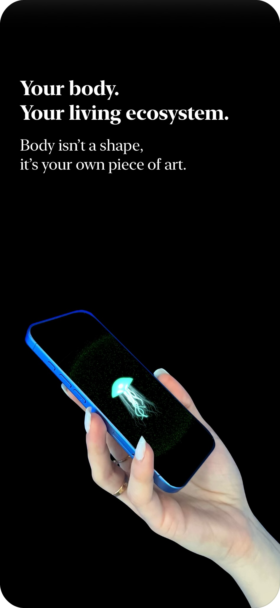
قبل از طراحی با زنانی از کشورهای مختلف حرف زدم تا بفهمم مسئله واقعی است یا ساختهی ذهن ما.
اولین پروتوتایپ را خودم اسکچ کردم: یک عروس دریایی. همانطور که بیشتر زنانی که با آنها صحبت کردیم بدنشان را توصیف کرده بودند؛ عنصری از طبیعت، نرم، شناور و زنده.
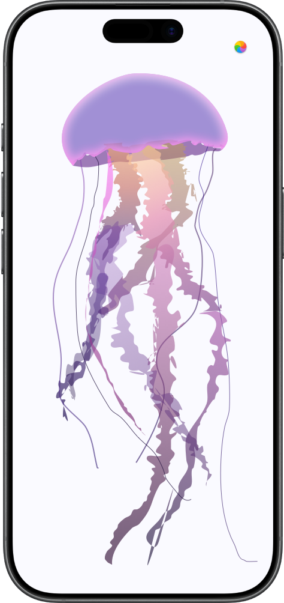
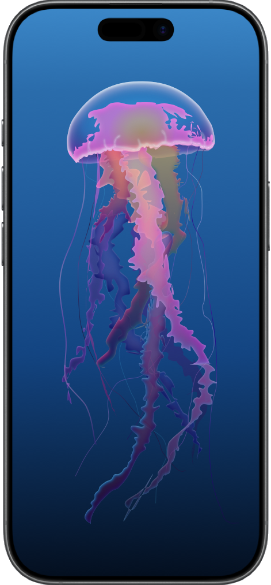
یک عروس دریایی آماده هیچوقت هدف نبود.
دادن یک شکل ازپیشکشیده به همهی زنها، دقیقاً همان چیزی بود که نیمفه با آن مبارزه میکند: یک ایدهآل واحد برای همه. پس اپ دادههای بیولوژیکی هر زن را میخواند و عروس دریایی را از آن میسازد؛ فرم، حرکت و رنگ، همه از ریتم منحصربهفرد خودش. نتیجه یک تصویر طراحیشده نیست؛ شکلی زنده است که فقط بدن او میتواند بسازد، و هیچوقت دو بار یکسان نیست.
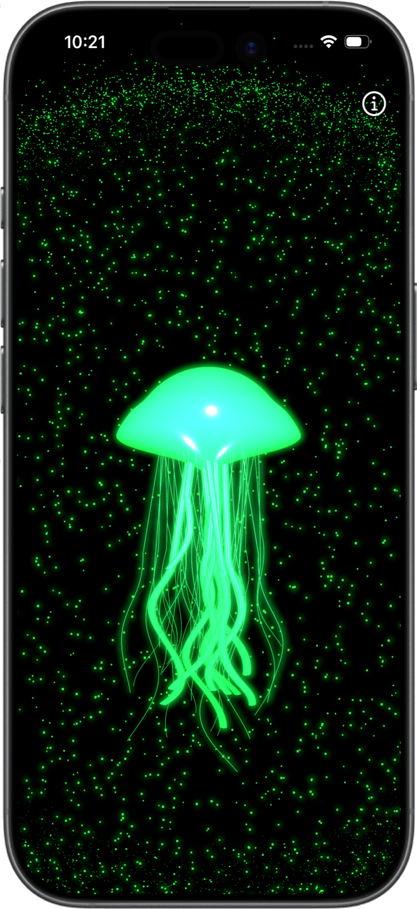
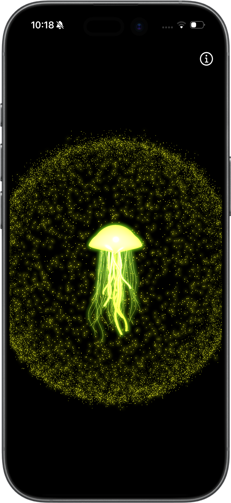
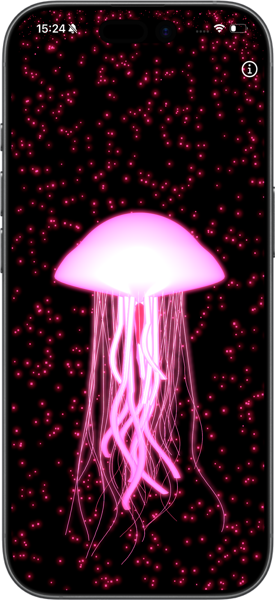
نیمفه را دقیقاً در نقطهی مقابل اپهای «اصلاح بدن» تعریف کردم.
لوگو، شعار و صفحههای App Store همه یک جمله را تکرار میکنند.
پوستر تعاملیای که زنان خودشان کاملش کردند؛ مخاطب پیش از انتشار درگیر شد.
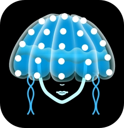
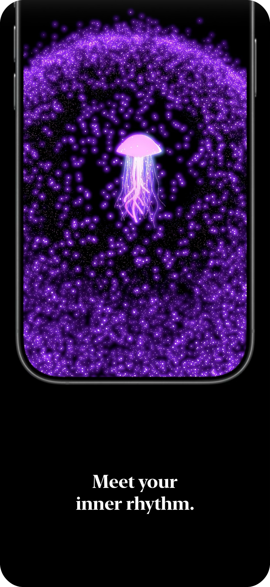
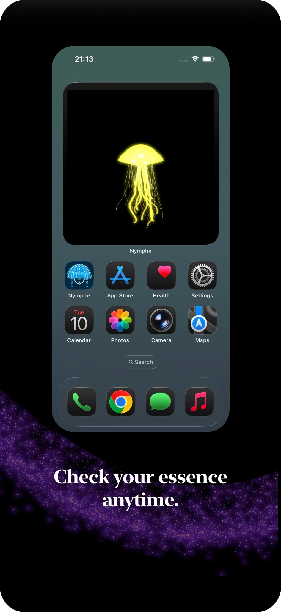
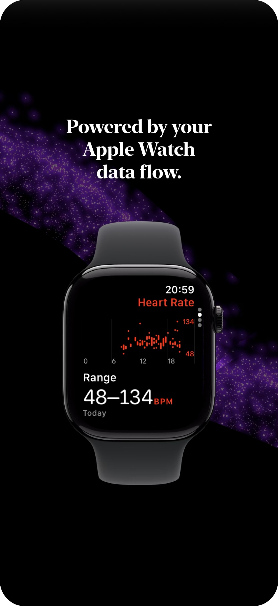
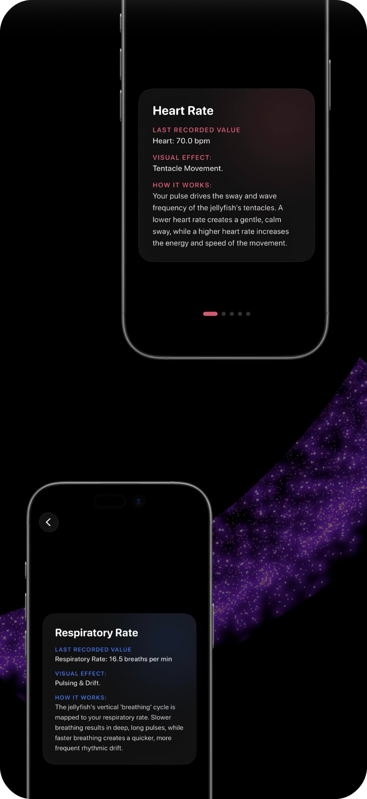
برای کسانی که وزوز گوش خواب و آرامش زندگیشان را گرفته است. سایلنتیوم کمک میکند وزوز را در دست بگیرند، تا صدای درون گوششان کمکم آرام شود و شبها دوباره بخوابند.
طراح UI/UX · پژوهشگر · مصاحبه و تست اپ با افراد مبتلا به وزوز · طراحی ارائهی پروژه · همکاری با اینفلوئنسرها برای معرفی اپ
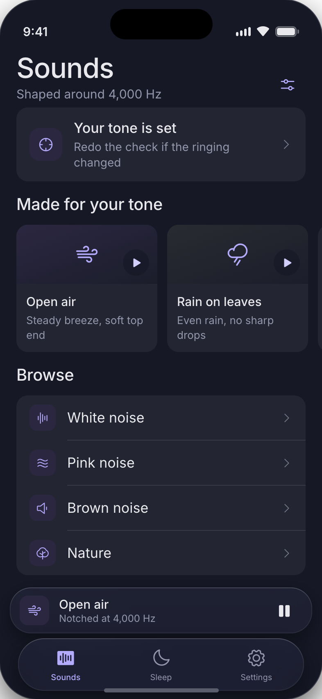
اپهای موجود در بازار برای همه یک صدای ثابت پخش میکنند؛ اما وزوز هر نفر فرکانس خودش را دارد و صدایی که برای یکی آرامشبخش است، برای دیگری اثری ندارد. بعد از مصاحبه با افراد مبتلا به وزوز و پژوهش در این حوزه، به فناوریای رسیدم که فرکانس وزوز هر کاربر را پیدا میکند. بر همین اساس، تستی طراحی و توسعه دادیم که کاربر با آن فرکانس وزوز گوش خودش را پیدا میکند. از آن لحظه، همهی صداهای اپ بر اساس فرکانس خود او ساخته میشوند.
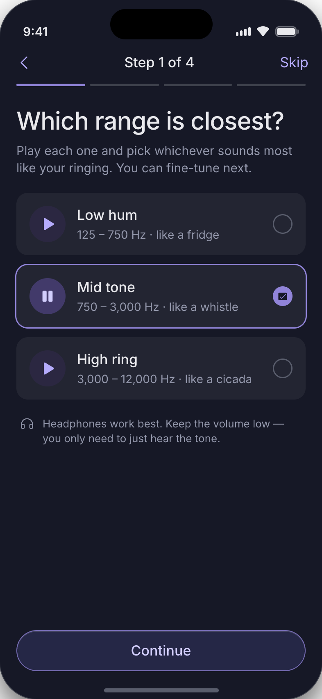
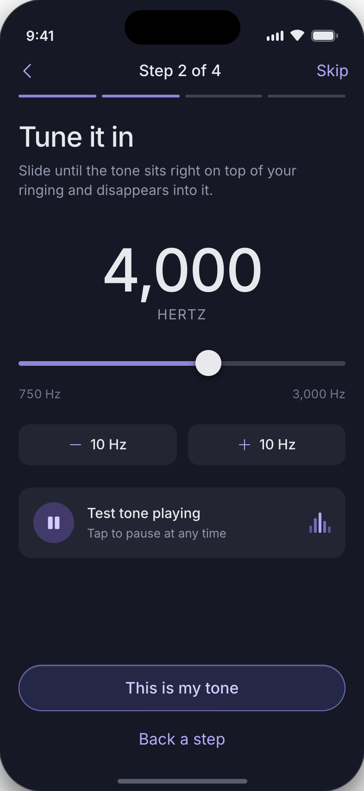
کاربر اول سه صدا را گوش میدهد و صدایی را که به وزوزش نزدیکتر است انتخاب میکند. بعد آن صدا را آنقدر تنظیم میکند تا دقیقاً شبیه وزوز گوشش شود. در آخر بلندی راحت را انتخاب میکند و اپ فرکانس او را ذخیره میکند. کل این تست حدود دو دقیقه طول میکشد.
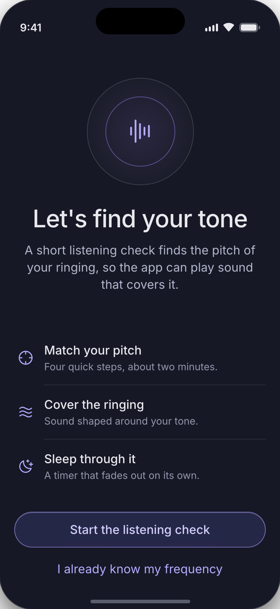
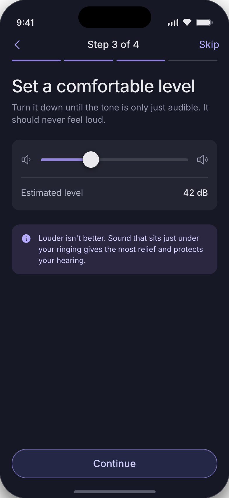
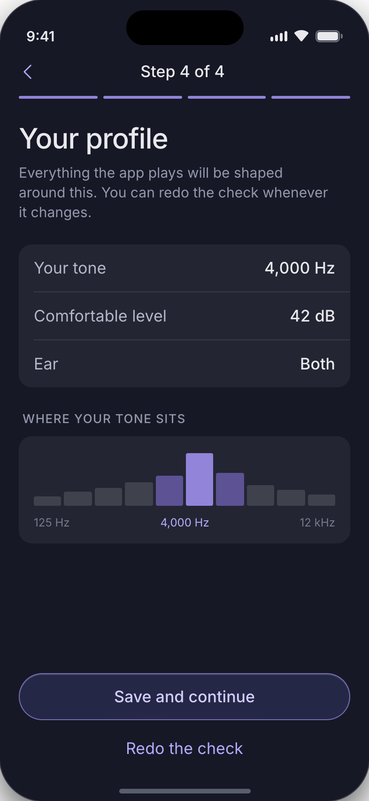
کتابخانهای از صداهای آرامشبخش که همه روی فرکانس وزوز خود کاربر تنظیم شدهاند. با «آرام کردن تون من»، صدا دقیقاً در همان فرکانس کم میشود تا وزوز کمتر شنیده شود.
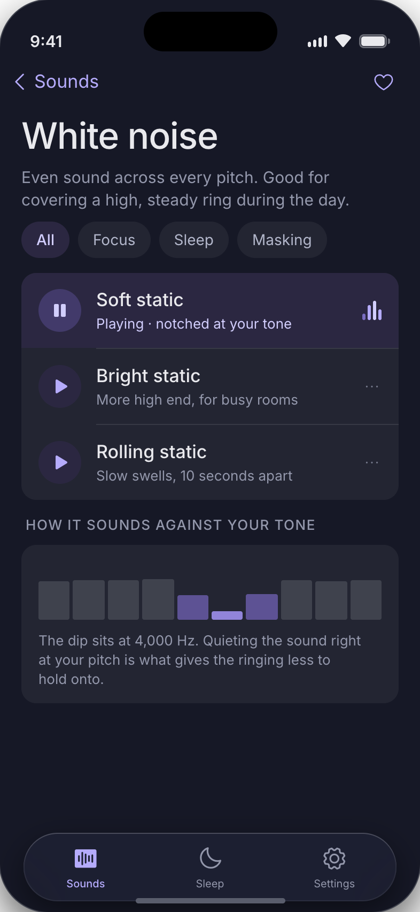
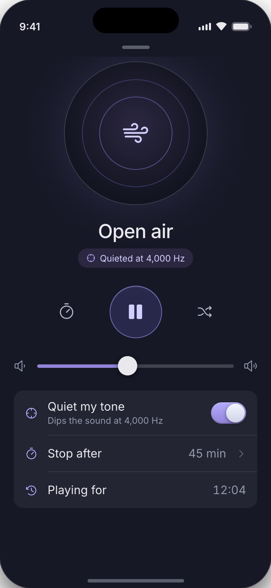
صداهایی که بعد از خوابیدن آرامآرام محو میشوند، با تایمر و زنگ بیداری. صفحه در شب کمنور میشود تا در اتاق تاریک چشم را اذیت نکند.
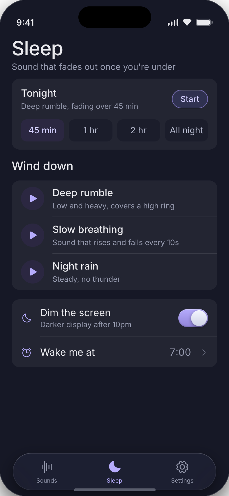
میانگین ساعت خواب، شبهای پشتسرهم و شدت وزوز در هفت روز گذشته. کاربر روزی یک بار ثبت میکند و بعد از چند هفته میبیند کدام صداها واقعاً به او کمک کردهاند.
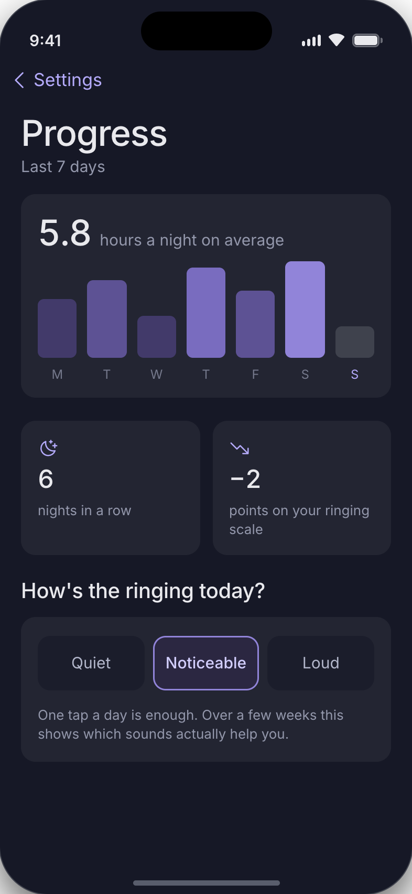
پروفایل شنوایی، فرکانس تون کاربر و امکان تکرار تست شنیداری در یک جا. تنظیمات پخش، پشتیبانی و اطلاعات حقوقی هم در همین صفحهاند.
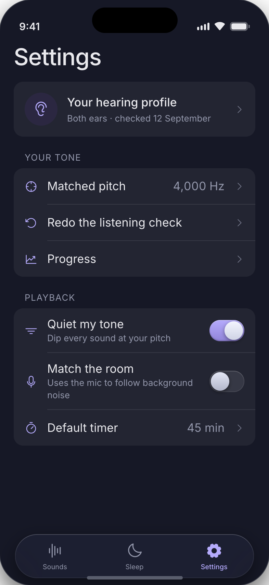
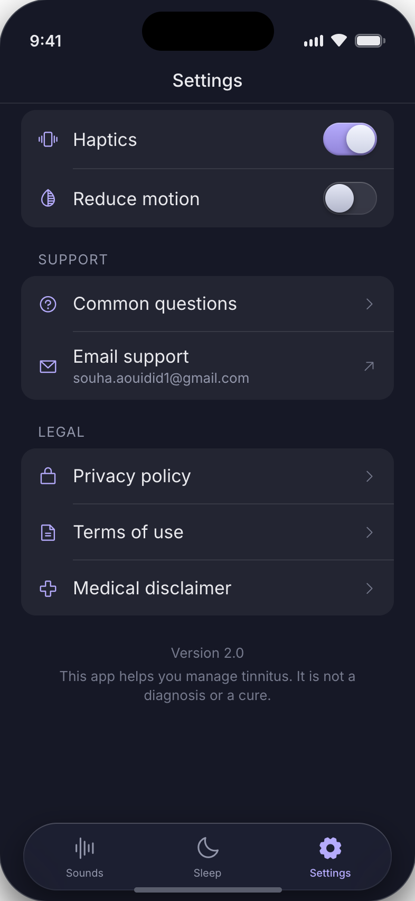
کورتکستا اسناد را کاملاً آفلاین خلاصه میکند؛ متن هیچوقت از گوشی بیرون نمیرود. با کورتکستا، متن تو مال خودت میماند.
مدیر پروژه · هدایت طراحی UI/UX · طراحی ارائهها و پوستر اپ · مدیریت زمانبندی تیم
Apple Developer Academy · تیم The Xmas Group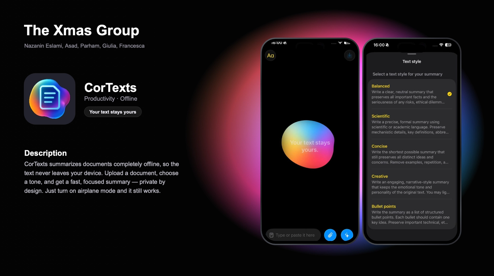
کاربر اغلب فقط بخشی از یک سند طولانی را میخواست، و مدلهای آفلاین روی دستگاه محدودیت حجم داشتند.
سبکهای متن (متعادل، مختصر، فهرست نکات) و لحن سفارشی، تا خلاصه روی همان بخشی تمرکز کند که برای کاربر مهم است.
سبکهای متن، تبدیل متن به گفتار، OCR با دوربین و وارد کردن فایل، همه آفلاین. حباب رنگی وقتی خلاصه آماده است به خود خلاصه تبدیل میشود و پیشرفت کار را نشان میدهد.
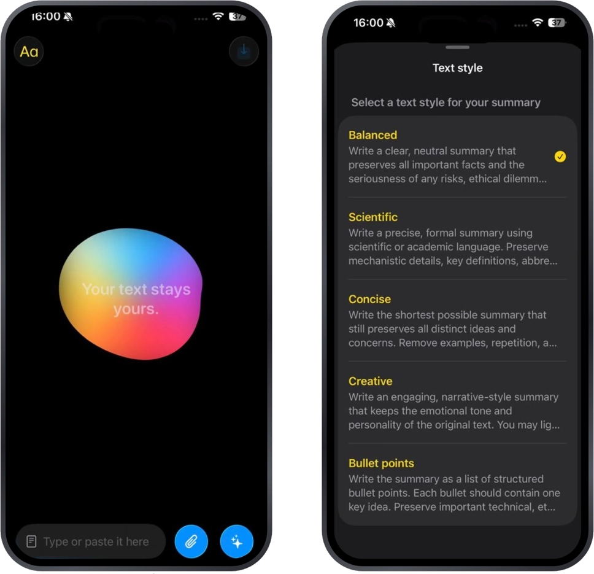